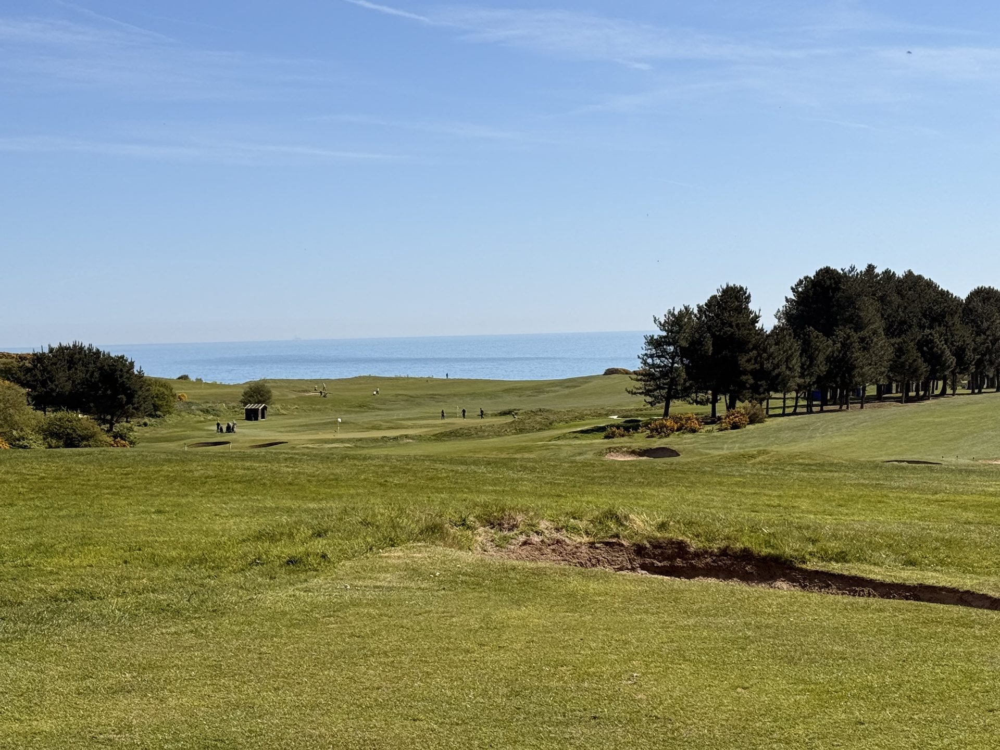
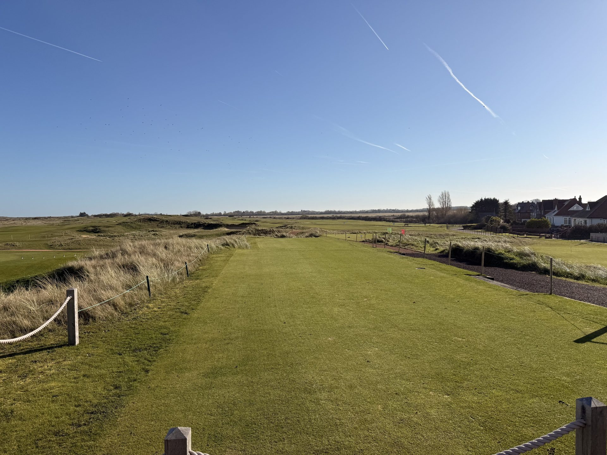
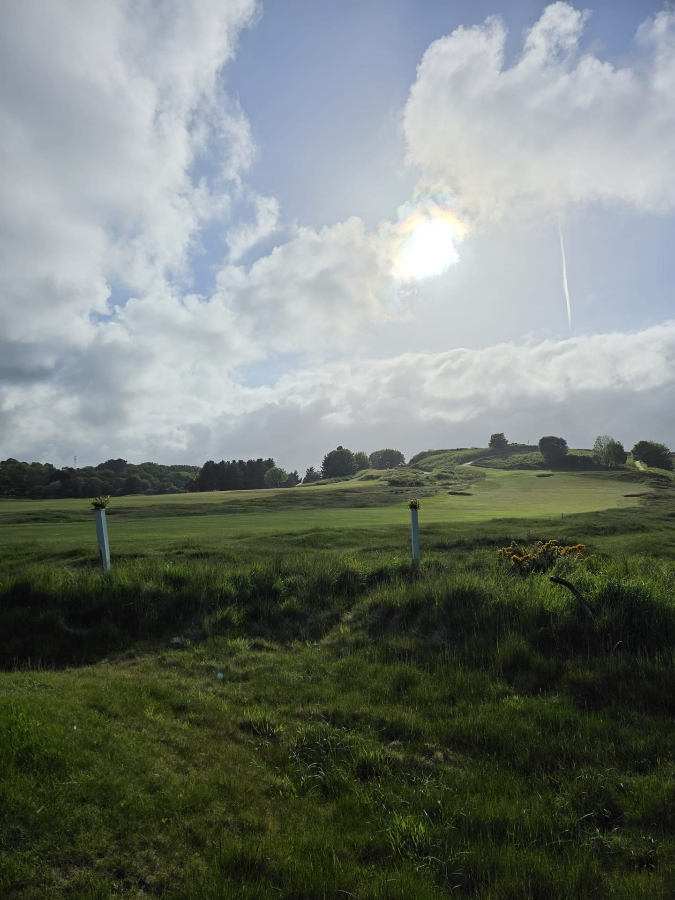

Norfolk and Suffolk have some of the finest golf in England — world-ranked courses, heathland classics, royal clubs with centuries of history. What they have lacked is a specialist who puts it together properly for the visiting golfer. That is what Golf East Anglia is for.
"The best golf experiences aren't found. They're arranged by someone who knows the courses, knows the region, and cares enough to get the details right."
Golf East Anglia was founded by people who have spent careers building bespoke travel experiences — not in offices, but in the field. Our background is in specialist travel: putting together journeys that go beyond accommodation and transport to create something that feels genuinely considered and properly local.
We turned that experience toward Norfolk and Suffolk because the opportunity was obvious and the gap was real. Two Top 100 courses. One World Top 100. Four courses in the NCG Top 100 for England. And no specialist operator in the market packaging it properly for the visiting golfer.
That is the gap we are filling. And because we come from a travel background rather than a golf retail background, the experience we build around the golf — the accommodation, the restaurants, the pace and flow of each day — is as carefully considered as the tee times themselves.
We do not sell packages in the traditional sense. We sell itineraries — and there is a meaningful difference. A package is fixed. An itinerary is a starting point that we shape around the people taking it.
When you enquire with Golf East Anglia, you receive a reply from a person who knows the courses, has thought about your group, and has built something around your dates, your size, and the experience you are looking for. Not a form response. Not a call centre. A considered proposal, within 24 hours.
We handle every tee time, manage every logistical detail — including the Brancaster tide tables — and remain available throughout your stay. You arrive, you play, you enjoy. Everything else is our responsibility.

We are specialists, not generalists. Our focus is Norfolk and Suffolk — two counties with a concentration of exceptional golf. We know these courses, these roads, these restaurants, and these tides.
Royal West Norfolk is inaccessible at high tide. Hunstanton is primarily a foursomes course. Woodbridge is weekdays only. These are the details that catch independent bookers off guard — and that we manage as standard.
No two groups are alike. We do not have a fixed catalogue. We have a region, a network, and the experience to shape something that fits — from a long weekend for four to a ten-night grand tour.
We work with visitors from the US, Europe, Australia and Asia. We quote in the currency that suits you and build itineraries that work for guests arriving from outside the UK.
The sandy soils of Suffolk and the firm links turf of Norfolk make East Anglia one of England's most reliable year-round golf destinations. We build itineraries for every month — not just peak summer. Ask us about winter golf.
Golf is the reason. The coast, the food, the countryside, and the unhurried pace of this part of England are what make a trip here truly memorable. We design around all of it.
Within thirty miles of the North Norfolk coast you will find four genuinely world-class courses. Royal West Norfolk at Brancaster is ranked in the world's top 100 and among the top 17 in England. Hunstanton is a championship links that serious golfers compare to the great courses of Scotland's west coast. Royal Cromer and Sheringham sit on dramatic clifftops and have been welcoming visitors since the Victorian era.
In Suffolk, the picture is equally compelling. Aldeburgh and Thorpeness are heathland classics praised by the greatest golf writers in the language. Woodbridge and Felixstowe Ferry complete a county offer of genuine depth — and Royal Worlington's Sacred Nine is widely regarded as the finest nine holes in the world.
This is not a region that lacks quality. It lacks a specialist voice. The courses ranked among England's finest for over a century remain largely unknown to the international visiting golfer — not because they are hard to reach, but because no one has packaged them properly.
Norfolk is within 2.5 hours of London by road. Suffolk is served by direct trains from London Liverpool Street in under 90 minutes. Both counties are easily reached from continental Europe by ferry, and from international airports at Stansted, Heathrow and Norwich. The infrastructure is there. The golf is extraordinary.

Whether you are planning a trip for yourself or a group — the enquiry process is the same. Browse our itineraries and experiences first if you'd like some inspiration. Tell us what you have in mind.